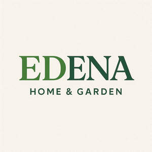
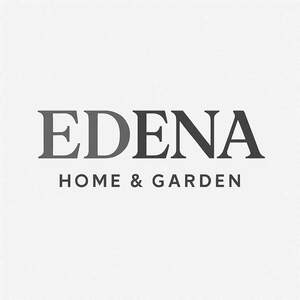

Trade Mark Journal No.2025/048 28 November 2025
UK00004285724 29 October 2025 (11,16,17,20,21)
Mark 1

Mark 2

- Class 11
- Toilet seats; portable toilet seats; children's and babies toilet seats; apparatus for lighting, heating and water supply; irrigation apparatus for garden use; garden fountains; barbecues; taps; taps for water butts; baths; toilet training seats; toilet seat adaptors and toilet seat adaptors for children; toilet seat trainers; steriliser and sterilisation apparatus and equipment; sterilisers for babies' feeding bottles; travel sterilising devices for babies' bottles and feeding equipment; lights for babies, infants and children; parts and fittings for all the aforesaid goods.
- Class 16
- Desk tidies; paper trays.
- Class 17
- Hoses for water butts.
- Class 20
- Baskets; bins; tubs; bottle racks; boxes; file boxes; casks; chests; containers not of metal; crates; wheeled storage containers; packaging containers of plastics; garden furniture and accessories; nursery boxes; furniture; office furniture; benches; cabinets; chairs; coat hangers; crates; cots; cradles; desks; drain tidies, including plate racks, dish racks, drawer organisers; dog kennels; doors and fittings; filing cabinets; flower pot pedestals; flower stands; footstools; photo frames; shelves; mirrors; hat stands; beds for household pets; infant playpens; ladders; letterboxes; lockers; mats for infant playpens; mats for sinks; nesting boxes; packaging containers of plastics; pet cushions and bedding; nursery furniture; stools; tables; trays; garden furniture; water storage containers and stands; parasol bases; chairs; garden baskets of wood or plastic; benches; cabinets; coat hangers; plastic containers (packaging); crates; cots; cradles; desks; drain tidies and drain covers of plastic; dog kennels; cat/dog flaps not of metal or masonry; filing cabinets; flower stands; photograph frames; shelves; mirrors; hat stands; beds for household pets; garden furniture and accessories, pillows and cushions; compost bins; water butts; water butt stands; water diverter kits for water butts; merchandising display stands; baby seats/boosters; step stools; potty chairs; infant and juvenile furniture; convertible furniture; high chairs; high chairs for babies; playpens; chairs; baby walkers; bedding for cots (other than bed linen); playpens for babies; babies' cradles; children's cradles; bouncing cradles; cots; cots for use by children and infants; cribs; nursery cots; safety cots; travel cots; bassinettes; support pillows for use in baby car safety seats; baby changing mats; changing mats; children's safety gates; baby walkers; workbenches; bath seats for babies; parts and fittings for all the aforesaid goods.
- Class 21
- Household and kitchen utensils and containers; cutlery and utensil drainers; sponge and cloth holders; sink caddies; combs, brushes (except paint brushes) and sponges; bins; buckets; cold boxes; containers for household, garden or kitchen use; lunch boxes; pots and pot lids; baby baths; baby bath supports and stands of plastics; bowls; bird baths; clothes pegs; cutlery, cups and plates of plastics; animal feeding bowls and troughs; flower pots and covers; plant pots; fly swatters; lunch boxes; litter trays for pets; scoops for litter trays and for use with pet animals; goldfish bowls; feeders for birds; mangers for animals; nozzles for watering cans and hoses; sprinklers for watering plants and flowers; trays for domestic purposes; watering cans; watering devices; washtubs; wheeled containers of non-metallic material for storage, household or kitchen use; babies potties; top and tail bowls for babies being bathing bowls for babies with two or more compartments for washing the face and genital area; domestic utensils and containers, horticultural containers, saucers and trays for horticultural containers, plant pot covers, bulb bowls, seed trays, gravel trays, propagators for seeds and plants, watering cans; non metallic wheeled storage containers for garden, household or kitchen use; sprinklers; watering cans; watering devices; window boxes of wood or of plastics; refuse bins; watering cans; roses for watering cans; garden pots, troughs and planters; drip dishes and trays for garden pots, planters and troughs; pot movers including plant caddies, plant trolleys, plant pot stands on wheels, plant movers including those on wheels or rollers; drainage domes for garden pots, troughs and planters; plant propagators, propagator trays and propagator covers; garden sieves; sponges; Infant and children's cups and dishes; baby tubs; potty seats; diaper pails; children's hair brushes and combs; plates; tea sets; lunchboxes; plastic cups; plastic bowls; plastic plates; beakers; sippers, being bottles and cups adapted for use by babies, toddlers and young children that prevent excess fluid escaping during use; snack-pots; food-pots; potties and toilet potties; toothbrush holders; broom handles; window boxes; bird feeding tables; broom handles; parts and fittings for all the aforesaid goods.
Strata Products Limited
Representative: Dolleymores